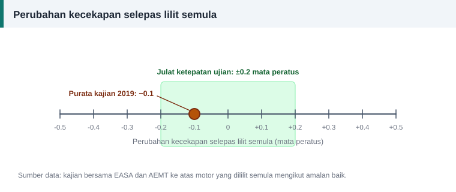

Kos dan kecekapan
Adakah Lilit Semula Mengurangkan Kecekapan Motor? Mitos dan Fakta
"Motor yang sudah digulung semula tidak sama lagi." Ayat ini biasa didengar, tetapi adakah ia benar? Mari bandingkan lima kepercayaan lazim dengan apa yang diukur dalam ujian.


Mitos 1: setiap lilitan semula menurunkan kecekapan 1% hingga 5%
Fakta: kajian bersama EASA dan AEMT pada 2003 menguji 22 motor baharu sebelum dan selepas dililit semula. Dengan amalan baik, kecekapan dikekalkan dalam julat ketepatan ujian, iaitu ±0.2%. Kajian susulan pada 2019 ke atas sepuluh motor kecekapan premium memberi keputusan serupa: purata perubahan hanya −0.1 mata peratus.
Mitos 2: lilitan semula berulang kali merosakkan motor sedikit demi sedikit
Fakta: kajian 2003 turut melilit semula beberapa motor sebanyak dua dan tiga kali. Purata perubahan kecekapan selepas itu masih kira-kira −0.1%, apabila proses dikawal.
Mitos 3: membakar belitan lama pasti merosakkan teras
Fakta: yang merosakkan ialah suhu tidak terkawal. Semua keputusan memuaskan dalam kajian itu dicapai dengan suhu teras kira-kira 370 °C di dalam ketuhar terkawal. Api terbuka dan suhu berlebihan memang merosakkan penebat di antara laminasi dan menaikkan kehilangan besi.
Mitos 4: dawai lebih tebal sentiasa lebih baik, walau apa pun caranya
Fakta: lebih banyak kuprum memang mengurangkan kehilangan, tetapi hanya jika bilangan lilitan, rentang dan panjang purata lilitan dikekalkan. Mengurangkan lilitan untuk memuatkan dawai tebal menaikkan fluks, kehilangan besi dan arus tanpa beban.
Mitos 5: semua bengkel memberi hasil yang sama
Fakta: dalam kajian 2003, kumpulan motor yang dililit semula tanpa kawalan khusus menunjukkan penurunan purata 0.6% pada mulanya. Sebahagian daripadanya berpunca daripada galas yang digris berlebihan, dan selepas itu dibetulkan penurunannya 0.4%. Kumpulan yang dikawal hampir tidak berubah. Kaedah kerja, bukan lilitan semula itu sendiri, yang membuat perbezaan.
Apa yang benar-benar menjaga kecekapan
- Kawal suhu ketika melembutkan belitan lama.
- Jangan rosakkan teras semasa menarik gegelung dan membersihkan alur.
- Salin bilangan lilitan, rentang dan sambungan dengan tepat.
- Kekalkan atau tambah luas keratan kuprum.
- Jangan panjangkan hujung belitan.
- Jangan terlebih gris pada galas.
Langkah kerja yang selari dengan senarai ini ada dalam panduan melilit semula motor tiga fasa.
Kesimpulan
Lilitan semula yang dibuat dengan teliti mengekalkan kecekapan motor. Soalan yang lebih penting ialah sama ada motor itu patut dibaiki sama sekali, dan itu dibincangkan dalam lilit semula atau ganti baharu.
Rujukan dan bacaan lanjut
Artikel berkaitan
Lilit Semula atau Ganti Baharu? Cara Membuat Keputusan
Kos baik pulih hanya sebahagian daripada kiraan. Bandingkan harga, keadaan teras, kecekapan dan kos elektrik sepanjang hayat untuk memutuskan sama ada motor patut dililit semula.
Langkah Demi Langkah Melilit Semula Motor Tiga Fasa
Daripada menanggalkan belitan lama hingga ujian akhir, ikuti sepuluh langkah melilit semula stator motor tiga fasa dengan kemas, selamat dan mengikut amalan baik bengkel.
Mengira Panjang dan Berat Dawai Kuprum untuk Lilitan Semula
Dawai kuprum dijual mengikut berat, bukan panjang. Kira panjang purata satu lilitan, jumlah panjang dan berat yang perlu dibeli supaya tidak terkurang di tengah kerja.